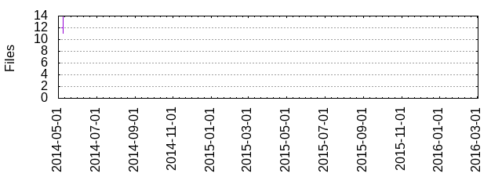

Files
General
Activity
Authors
Files
Lines
Tags
Total files
14
Total lines
391
Average file size
18922.86 bytes
File count by date

Extensions
Extension
Files (%)
Lines (%)
Lines/file
1 (7.14%)
3 (0.77%)
3
coffee
4 (28.57%)
288 (73.66%)
72
cson
2 (14.29%)
17 (4.35%)
8
gif
2 (14.29%)
1400 (358.06%)
700
json
1 (7.14%)
22 (5.63%)
22
less
1 (7.14%)
8 (2.05%)
8
md
3 (21.43%)
52 (13.30%)
17